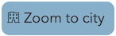
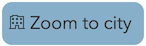
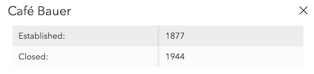
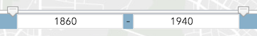
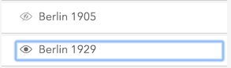

Mapping Modern Jewish Cultures
How to use the Browse by City tool
Click on a city icon
 to explore cafes in space and time. Opt to either view a for a curated tour of a city, or select 
to explore cafes in space and time. Opt to either view a for a curated tour of a city, or select 
Click on café markers to view detailed information about cafes:

Use the time slider to filter by year:

Select items in the Layer window to display historic city maps:

Use the globe button to return to the full extent of the map.